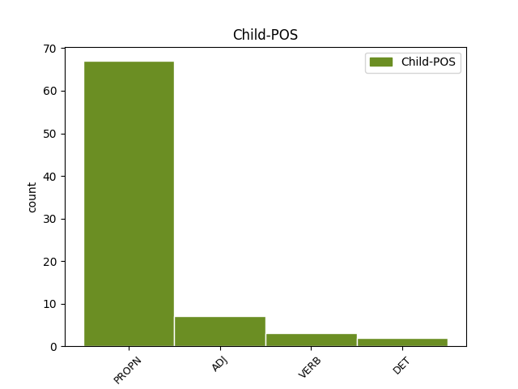

Distribution of features within this leaf

Agreement Rules sorted by frequency.
- When the dependent token is the flat multiword expression(flat) of the head token, and the head token is PROPN and the dependent token is PROPN.
1 Vytautas Vytautas PROPN NNP Case=Nom|Gender=Masc|Number=Sing 0 _ _ _
2 Radžvilas Radžvilas PROPN NNP Case=Nom|Gender=Masc|Number=Sing 1 flat _ En=Radžvilas
3 kalba _ _ _ _ 0 _ _ _
4 apie _ _ _ _ 0 _ _ _
5 Lietuvos _ _ _ _ 0 _ _ _
6 išvalstybinimą _ _ _ _ 0 _ _ _
7 , _ _ _ _ 0 _ _ _
8 nutautinimą _ _ _ _ 0 _ _ _
9 , _ _ _ _ 0 _ _ _
10 valstybinės _ _ _ _ 0 _ _ _
11 ir _ _ _ _ 0 _ _ _
12 tautinės _ _ _ _ 0 _ _ _
13 sąmonės _ _ _ _ 0 _ _ _
14 dekonstrukciją _ _ _ _ 0 _ _ _
15 Europos _ _ _ _ 0 _ _ _
16 Sąjungoje _ _ _ _ 0 _ _ _
17 . _ _ _ _ 0 _ _ _
1 Esu _ _ _ _ 0 _ _ _
2 ne _ _ _ _ 0 _ _ _
3 kartą _ _ _ _ 0 _ _ _
4 kalbėjęs _ _ _ _ 0 _ _ _
5 apie _ _ _ _ 0 _ _ _
6 pavojingą _ _ _ _ 0 _ _ _
7 „ _ _ _ _ 0 _ _ _
8 lietuviškąją _ _ _ _ 0 _ _ _
9 triadą _ _ _ _ 0 _ _ _
10 “ _ _ _ _ 0 _ _ _
11 ( _ _ _ _ 0 _ _ _
12 sakyčiau _ _ _ _ 0 _ _ _
13 , _ _ _ _ 0 _ _ _
14 lietuviškąjį _ _ _ _ 0 _ _ _
15 Bermudų _ _ _ _ 0 _ _ _
16 trikampį _ _ _ _ 0 _ _ _
17 ) _ _ _ _ 0 _ _ _
18 – _ _ _ _ 0 _ _ _
19 nesutarimus _ _ _ _ 0 _ _ _
20 su _ _ _ _ 0 _ _ _
21 rusais _ _ _ _ 0 _ _ _
22 , _ _ _ _ 0 _ _ _
23 lenkais _ _ _ _ 0 _ _ _
24 ir _ _ _ _ 0 _ _ _
25 žydais _ _ _ _ 0 _ _ _
26 , _ _ _ _ 0 _ _ _
27 arba _ _ _ _ 0 _ _ _
28 su _ _ _ _ 0 _ _ _
29 Rusija _ _ _ _ 0 _ _ _
30 , _ _ _ _ 0 _ _ _
31 Lenkija Lenkija PROPN NNP Case=Nom|Gender=Fem|Number=Sing 0 _ _ _
32 ir _ _ _ _ 0 _ _ _
33 Izraeliu Izraelis PROPN NNP Case=Ins|Gender=Masc|Number=Sing 31 conj _ En=Israel|SpaceAfter=No
34 . _ _ _ _ 0 _ _ _
1 Jei _ _ _ _ 0 _ _ _
2 kas _ _ _ _ 0 _ _ _
3 nori _ _ _ _ 0 _ _ _
4 gyventi _ _ _ _ 0 _ _ _
5 tobulai _ _ _ _ 0 _ _ _
6 nepriklausomoje _ _ _ _ 0 _ _ _
7 Šiaurės šiaurė PROPN NNP Case=Gen|Gender=Fem|Number=Sing 8 mod _ En=north
8 Korėjoje Korėja PROPN NNP Case=Loc|Gender=Fem|Number=Sing 0 _ _ _
9 , _ _ _ _ 0 _ _ _
10 tegu _ _ _ _ 0 _ _ _
11 gyvena _ _ _ _ 0 _ _ _
12 , _ _ _ _ 0 _ _ _
13 bet _ _ _ _ 0 _ _ _
14 tautai _ _ _ _ 0 _ _ _
15 to _ _ _ _ 0 _ _ _
16 prašom _ _ _ _ 0 _ _ _
17 nesiūlyti _ _ _ _ 0 _ _ _
18 . _ _ _ _ 0 _ _ _
1 Jei _ _ _ _ 0 _ _ _
2 kas _ _ _ _ 0 _ _ _
3 nori _ _ _ _ 0 _ _ _
4 gyventi _ _ _ _ 0 _ _ _
5 tobulai _ _ _ _ 0 _ _ _
6 nepriklausomoje nepriklausomas ADJ JJL Case=Loc|Definite=Ind|Degree=Pos|Gender=Fem|Number=Sing 8 mod _ En=substantive
7 Šiaurės _ _ _ _ 0 _ _ _
8 Korėjoje Korėja PROPN NNP Case=Loc|Gender=Fem|Number=Sing 0 _ _ _
9 , _ _ _ _ 0 _ _ _
10 tegu _ _ _ _ 0 _ _ _
11 gyvena _ _ _ _ 0 _ _ _
12 , _ _ _ _ 0 _ _ _
13 bet _ _ _ _ 0 _ _ _
14 tautai _ _ _ _ 0 _ _ _
15 to _ _ _ _ 0 _ _ _
16 prašom _ _ _ _ 0 _ _ _
17 nesiūlyti _ _ _ _ 0 _ _ _
18 . _ _ _ _ 0 _ _ _
1 Turbūt _ _ _ _ 0 _ _ _
2 ir _ _ _ _ 0 _ _ _
3 pats pats DET DT Case=Nom|Gender=Masc|Number=Sing 4 det _ En=self
4 Vytautas Vytautas PROPN NNP Case=Nom|Gender=Masc|Number=Sing 0 _ _ _
5 Kavolis _ _ _ _ 0 _ _ _
6 juos _ _ _ _ 0 _ _ _
7 pakartotų _ _ _ _ 0 _ _ _
8 . _ _ _ _ 0 _ _ _
1 Taip _ _ _ _ 0 _ _ _
2 nėra _ _ _ _ 0 _ _ _
3 ir _ _ _ _ 0 _ _ _
4 Strepsiado _ _ _ _ 0 _ _ _
5 - _ _ _ _ 0 _ _ _
6 Sokrato _ _ _ _ 0 _ _ _
7 ( _ _ _ _ 0 _ _ _
8 tiksliau _ _ _ _ 0 _ _ _
9 , _ _ _ _ 0 _ _ _
10 Aristofano Aristofanas PROPN NNP Case=Gen|Gender=Masc|Number=Sing 0 _ _ _
11 - _ _ _ _ 0 _ _ _
12 Sokrato Sokratas PROPN NNP Case=Gen|Gender=Masc|Number=Sing 10 list _ En=Socrates|SpaceAfter=No
13 ) _ _ _ _ 0 _ _ _
14 konflikte _ _ _ _ 0 _ _ _
15 . _ _ _ _ 0 _ _ _
1 Žinoma _ _ _ _ 0 _ _ _
2 , _ _ _ _ 0 _ _ _
3 tai _ _ _ _ 0 _ _ _
4 tinkamiausias _ _ _ _ 0 _ _ _
5 būdas _ _ _ _ 0 _ _ _
6 : _ _ _ _ 0 _ _ _
7 todėl _ _ _ _ 0 _ _ _
8 visą _ _ _ _ 0 _ _ _
9 savo _ _ _ _ 0 _ _ _
10 sąmoningą _ _ _ _ 0 _ _ _
11 gyvenimą _ _ _ _ 0 _ _ _
12 pasisakydavau _ _ _ _ 0 _ _ _
13 ir _ _ _ _ 0 _ _ _
14 dabar _ _ _ _ 0 _ _ _
15 pasisakau _ _ _ _ 0 _ _ _
16 už _ _ _ _ 0 _ _ _
17 nepriklausomą nepriklausyti VERB VBNL Case=Acc|Definite=Ind|Gender=Masc|Number=Sing|Polarity=Neg|Reflex=No|Tense=Pres|VerbForm=Part|Voice=Pass 18 mod _ En=substantive
18 Lietuvą Lietuva PROPN NNP Case=Acc|Gender=Fem|Number=Sing 0 _ _ _
19 . _ _ _ _ 0 _ _ _
1 Taip _ _ _ _ 0 _ _ _
2 nėra _ _ _ _ 0 _ _ _
3 ir _ _ _ _ 0 _ _ _
4 Strepsiado Strepsiado PROPN NNP Case=Gen|Gender=Masc|Number=Sing 0 _ _ _
5 - _ _ _ _ 0 _ _ _
6 Sokrato _ _ _ _ 0 _ _ _
7 ( _ _ _ _ 0 _ _ _
8 tiksliau _ _ _ _ 0 _ _ _
9 , _ _ _ _ 0 _ _ _
10 Aristofano Aristofanas PROPN NNP Case=Gen|Gender=Masc|Number=Sing 4 appos _ En=Aristofane|SpaceAfter=No
11 - _ _ _ _ 0 _ _ _
12 Sokrato _ _ _ _ 0 _ _ _
13 ) _ _ _ _ 0 _ _ _
14 konflikte _ _ _ _ 0 _ _ _
15 . _ _ _ _ 0 _ _ _
1 Leonidas Leonidas PROPN NNP Case=Nom|Gender=Masc|Number=Sing 0 _ _ _
2 Donskis _ _ _ _ 0 _ _ _
3 – _ _ _ _ 0 _ _ _
4 vienas vienas ADJ JJL Case=Nom|Definite=Ind|Degree=Pos|Gender=Masc|Number=Sing 1 appos _ En=one
5 iš _ _ _ _ 0 _ _ _
6 nedaugelio _ _ _ _ 0 _ _ _
7 mūsų _ _ _ _ 0 _ _ _
8 intelektualų _ _ _ _ 0 _ _ _
9 , _ _ _ _ 0 _ _ _
10 kuris _ _ _ _ 0 _ _ _
11 dar _ _ _ _ 0 _ _ _
12 neatmetė _ _ _ _ 0 _ _ _
13 Sokrato _ _ _ _ 0 _ _ _
14 priesaikų _ _ _ _ 0 _ _ _
15 – _ _ _ _ 0 _ _ _
16 viešai _ _ _ _ 0 _ _ _
17 klausia _ _ _ _ 0 _ _ _
18 : _ _ _ _ 0 _ _ _
19 kas _ _ _ _ 0 _ _ _
20 su _ _ _ _ 0 _ _ _
21 mumis _ _ _ _ 0 _ _ _
22 atsitiko _ _ _ _ 0 _ _ _
23 ? _ _ _ _ 0 _ _ _
1 Ne _ _ _ _ 0 _ _ _
2 tik _ _ _ _ 0 _ _ _
3 žydų _ _ _ _ 0 _ _ _
4 , _ _ _ _ 0 _ _ _
5 bet _ _ _ _ 0 _ _ _
6 ir _ _ _ _ 0 _ _ _
7 airių _ _ _ _ 0 _ _ _
8 dauguma _ _ _ _ 0 _ _ _
9 gyvena _ _ _ _ 0 _ _ _
10 diasporoje _ _ _ _ 0 _ _ _
11 , _ _ _ _ 0 _ _ _
12 ir _ _ _ _ 0 _ _ _
13 tai _ _ _ _ 0 _ _ _
14 anaiptol _ _ _ _ 0 _ _ _
15 nekenkia _ _ _ _ 0 _ _ _
16 nei _ _ _ _ 0 _ _ _
17 Izraeliui Izraelis PROPN NNP Case=Dat|Gender=Masc|Number=Sing 0 _ _ _
18 , _ _ _ _ 0 _ _ _
19 nei _ _ _ _ 0 _ _ _
20 Airijai Airija PROPN NNP Case=Dat|Gender=Fem|Number=Sing 17 comp:obj _ En=Airija|SpaceAfter=No
21 . _ _ _ _ 0 _ _ _
Disagree Examples:
1 Konkurse _ _ _ _ 0 _ _ _
2 tada _ _ _ _ 0 _ _ _
3 ji _ _ _ _ 0 _ _ _
4 užėmė _ _ _ _ 0 _ _ _
5 tik _ _ _ _ 0 _ _ _
6 trečią _ _ _ _ 0 _ _ _
7 vietą _ _ _ _ 0 _ _ _
8 : _ _ _ _ 0 _ _ _
9 pirmąją _ _ _ _ 0 _ _ _
10 gavo _ _ _ _ 0 _ _ _
11 Kratinas _ _ _ _ 0 _ _ _
12 už _ _ _ _ 0 _ _ _
13 komediją _ _ _ _ 0 _ _ _
14 „ _ _ _ _ 0 _ _ _
15 Butelis _ _ _ _ 0 _ _ _
16 “ _ _ _ _ 0 _ _ _
17 ( _ _ _ _ 0 _ _ _
18 apie _ _ _ _ 0 _ _ _
19 paties _ _ _ _ 0 _ _ _
20 dramaturgo _ _ _ _ 0 _ _ _
21 kovą _ _ _ _ 0 _ _ _
22 su _ _ _ _ 0 _ _ _
23 alkoholizmu _ _ _ _ 0 _ _ _
24 ) _ _ _ _ 0 _ _ _
25 , _ _ _ _ 0 _ _ _
26 antrąją _ _ _ _ 0 _ _ _
27 Amipsijus Amipsijus PROPN NNP Case=Nom|Gender=Masc|Number=Sing 0 _ _ _
28 , _ _ _ _ 0 _ _ _
29 apie _ _ _ _ 0 _ _ _
30 kurį _ _ _ _ 0 _ _ _
31 beveik _ _ _ _ 0 _ _ _
32 nieko _ _ _ _ 0 _ _ _
33 nežinome žinoti VERB VBC Mood=Ind|Number=Plur|Person=1|Polarity=Neg|Reflex=No|Tense=Pres|VerbForm=Fin|Voice=Act 27 mod@relcl _ En=know|SpaceAfter=No
34 . _ _ _ _ 0 _ _ _
1 Esu _ _ _ _ 0 _ _ _
2 skaitęs _ _ _ _ 0 _ _ _
3 – _ _ _ _ 0 _ _ _
4 tiesa _ _ _ _ 0 _ _ _
5 , _ _ _ _ 0 _ _ _
6 ne _ _ _ _ 0 _ _ _
7 lietuvių _ _ _ _ 0 _ _ _
8 spaudoje _ _ _ _ 0 _ _ _
9 , _ _ _ _ 0 _ _ _
10 - _ _ _ _ 0 _ _ _
11 interviu _ _ _ _ 0 _ _ _
12 su _ _ _ _ 0 _ _ _
13 mergina _ _ _ _ 0 _ _ _
14 iš _ _ _ _ 0 _ _ _
15 Europos _ _ _ _ 0 _ _ _
16 , _ _ _ _ 0 _ _ _
17 kuri _ _ _ _ 0 _ _ _
18 atsako _ _ _ _ 0 _ _ _
19 į _ _ _ _ 0 _ _ _
20 klausimą _ _ _ _ 0 _ _ _
21 , _ _ _ _ 0 _ _ _
22 kuo _ _ _ _ 0 _ _ _
23 skiriasi _ _ _ _ 0 _ _ _
24 Rytų rytas PROPN NNP Case=Gen|Gender=Masc|Number=Plur 25 mod _ En=East
25 Europos Europa PROPN NNP Case=Gen|Gender=Fem|Number=Sing 0 _ _ _
26 politinė _ _ _ _ 0 _ _ _
27 scena _ _ _ _ 0 _ _ _
28 nuo _ _ _ _ 0 _ _ _
29 Vakarų _ _ _ _ 0 _ _ _
30 politinės _ _ _ _ 0 _ _ _
31 scenos _ _ _ _ 0 _ _ _
32 . _ _ _ _ 0 _ _ _